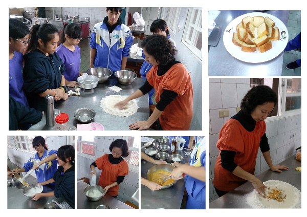
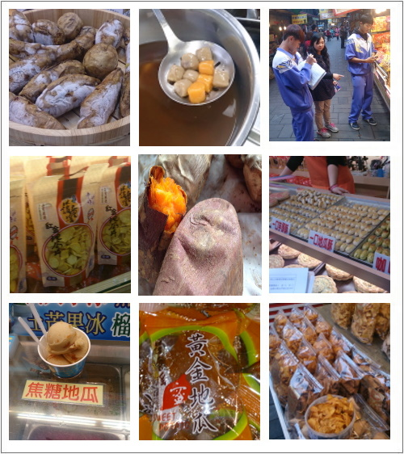
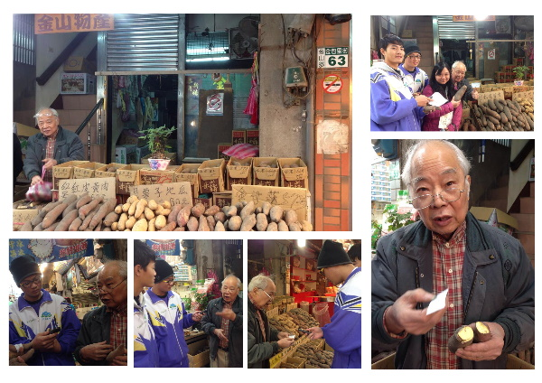

FIELD JOURNAL / 2015 專題紀錄
每一份幫忙，都讓故事多走一段。
把謝意留給老師、農民、店家與每一位協助研究的人，並把照片與當時的記憶放在一起。
長達三個月的專題已進入尾聲。一路上得到許多人的幫忙，我們才能完成這次的專題研究。在此以簡短的幾句話，向幫助過我們的人表達感謝。
華欣老師｜專題的領路人
首先感謝專題指導老師華欣老師。每當專題陷入瓶頸，您總是一語點醒夢中人，為迷霧中的我們指出一條明路，讓我們受益良多。訪問常得在上課時間外出，華欣老師總是不辭辛勞、犧牲自己的課餘時間帶我們進行。這次專題能夠完成，華欣老師的指點不可或缺。

華欣老師指導我們，並帶我們到校外進行專訪
鳳英老師｜讓文字更有力量
感謝國文指導老師鳳英老師，讓我們能把蒐集、採訪到的資料整理並內化為自己的知識，以文章的方式呈現，語文表達與寫作能力都大有進步。專題內容能如此充實，鳳英老師的指導功不可沒。

鳳英老師指導我們寫作
美玲老師｜把料理變成學習
在實作與體驗的部分，要特別感謝三位。感謝美玲老師在創意料理 DIY 幫了我們很多，願意撥出個人時間答應我們的請求，教我們製作地瓜創意料理，不僅讓我們在烹飪上有所學習，也教會我們分享。


美玲老師指導我們製作地瓜創意料理
林先生與林太太｜一起走進田野
也很感謝林先生和林太太，焢窯體驗的場地與材料都由他們準備，我們才有這次珍貴的體驗。焢窯需要耐心與細心，堆窯過程中我們的窯倒了兩次，但這沒有讓我們氣餒，反而讓我們體會到同心協力、團隊合作的重要；唯有如此，才能嘗到甜美的烤地瓜。

林先生和林太太提供焢窯與挖地瓜的場地
林先生和林太太也協助我們體驗挖地瓜，讓我們走進真正的地瓜田實際學習。種地瓜真的是辛苦的工作，我們只是用鋤頭挖幾顆地瓜就氣喘吁吁，地瓜農卻要把整片田採收完，而「採收」只是種地瓜的其中一個環節。可想而知，我們能品嘗到好吃的金山地瓜，背後是農民用力氣與汗水細心栽種的成果。我們要知足惜福，感謝我們所吃的每一口食物。


探訪金山老街與販售地瓜產品的店家
農會與店家｜打開採訪的大門
訪問的部分，要特別感謝金山農會展售中心，以及金山老街的攤販與店家。謝謝他們願意接受訪問，讓我們知道地瓜有哪些加工食品；這些多樣的產品不但帶來經濟效益，也讓觀光客來金山時有了可以帶回去的伴手禮。


訪問金山物產的老闆劉先生
地瓜達人｜分享土地的知識
感謝金山物產的老闆劉先生與旺旺地瓜園的園主賴先生，讓我們學到許多地瓜的知識，例如品種之間的差異、如何種植地瓜。我們從書籍與網路蒐集、閱讀的資料，遠不如實際接觸、親身體驗一次。經由這次專題，我們學到了許多課本上學不到的知識。

旺旺地瓜園園主賴先生接受我們的訪問
最後，感謝每一位為這個專題勞心勞力的人。謝謝大家的努力付出，相信我們的努力一定會得到肯定。